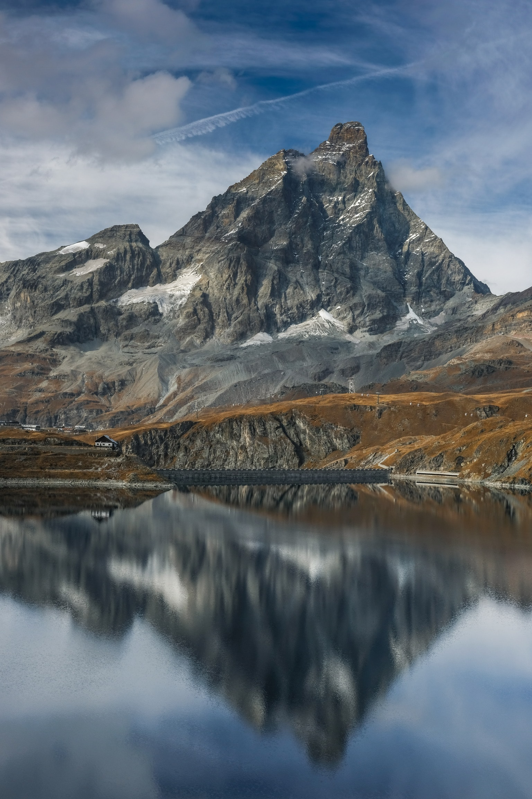
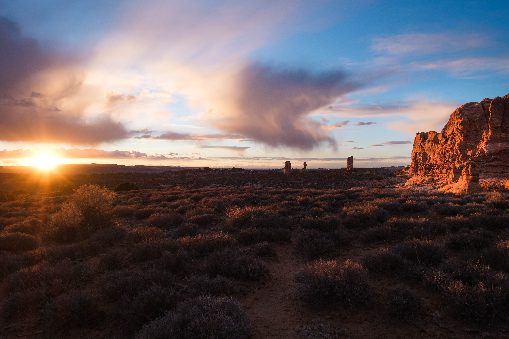
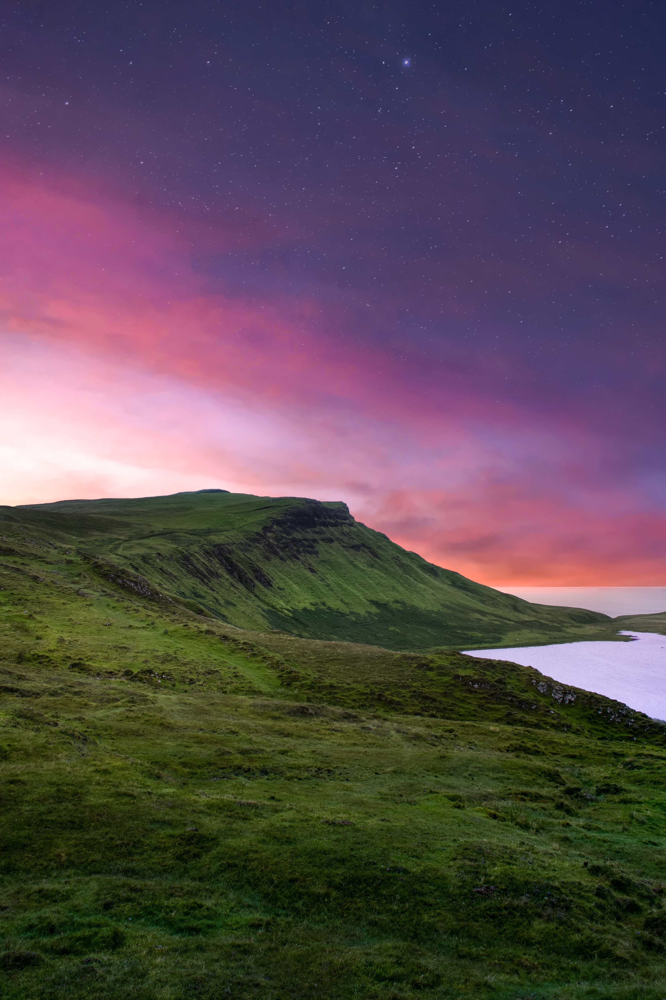
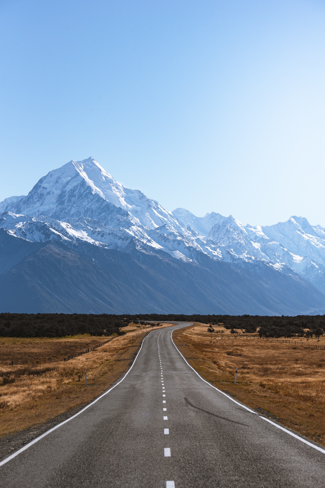

What is Landscape Photography?
Landscape photography captures the beauty of the natural world. It often focuses on the wide expanse of a beautiful landscape, but can also showcase the smallest details of a natural setting. It is a popular genre of photography and is enjoyed by both amateurs and professionals alike.
How to Get Started in Landscape Photography
Getting started in landscape photography can be a bit daunting, but it doesn't have to be. With a few basic tips and some practice, you can start capturing stunning images of the natural world. Some tips to get you started include:
- Research the best locations for landscape photography in your area
- Invest in a good quality camera and lenses
- Experiment with different compositions and lighting
- Shoot during the golden hours (sunrise and sunset) for the best lighting
- Consider using filters to enhance your images
Examples of Stunning Landscape Photography
Here are some examples of stunning landscape photography:





